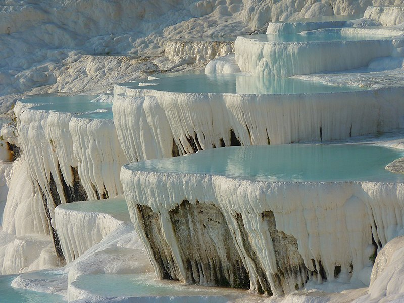

DENİZLİ
Pamukkale Travertenleri
Pamukkale Travertenleri Denizli il merkezine yaklaşık 20 km uzaklıkta olup, bölgede yer alan termal su kaynaklarının gün yüzüne çıkınca kimyasal bir tepkime vererek kalsiyum karbonat çökeltisi oluşturmasıyla meydana gelmiştir. 2 ana kısımda toplanan doğal travertenlere giriş yasak olup ön kısımda bulunan yapay alanlara ayakkabısız ve terliksiz olarak giriş serbestisi bulunmaktadır. Yılın her mevsimi yerli ve yabancı turistlerin uğrak noktası olan Pamukkale fotoğrafçıların da gözdesidir. Ayrıca Travertenlerin arka kısmında yer alan yamaçta yamaç paraşütü de yapılmaktadır. Pamukkale Travertenleri harita bilgisi için buraya tıklamanız yeterli.
Pamukkale
Pamukkale, güneybatı Türkiye'deki Denizli ilinde doğal bir mevkidir. Kent Kaplıcaları ve akan sulardan kalan karbonat minerallerin teraslarını, travertenlerini kapsamaktadır.
Konum
Türkiye'nin Ege bölgesinde, ılıman bir iklimi olan Menderes Nehri vadisinde bulunur. Hem yerli hem de yabancı turistlerin tercih yerlerindendir.
Eski Hierapolis kenti, toplam 2.700 metre uzunluğunda, 600 metre genişliğinde ve 160 metre yüksekliğindeki beyaz "kalenin" üzerine inşa edilmişti. Pamukkale, Denizli'nin 20 km uzaktaki merkezindeki vadinin karşı tarafındaki tepelerden görülebilir. 5–10 km yakınında Laodikya antik kenti bulunur. 5 km ilerisinde ise uluslararası bir termal merkez olan Karahayıt köyü vardır. Pamukkale UNESCO tarafından belirlenen Dünya Miras Listesi'nde yer almaktadır. Travertenler; görsel zenginliğin yanı sıra kalp rahatsızlıkları, romatizma, sindirim, solunum, dolaşım ve deri rahatsızlıklarına iyi gelmektedir.

Jeoloji
Pamukkale terasları, kaplıca suyu tarafından çökeltilmiş bir tortullu kayaç olan travertenden oluşur.
Bu bölgede, 35 °C den 100 °C ye kadar olan sıcaklık aralığında 17 adet sıcak su kaynağı vardır.
Kardeş kentler
- Türkiye, Antalya
- Moskova, Rusya
- Las Vegas, ABD
- Eger, Macaristan